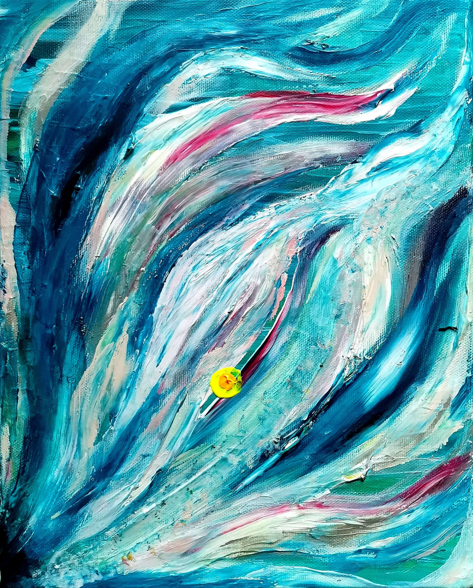

sato shiori / 1991 tokyo / painter・livepaint artist
幼少期から絵を描き続け、すべて独学で表現の道を歩んできました。
20歳からは都内のクラブイベントでライブペイントを開始。
その場の音楽や空気感を全身で感じ取り、パフォーマンスとして昇華させてきました。
私の作品やライブペイントは、そのほとんどがアクリル絵の具を使用しています。
『絵は生きている』――その信念のもと、魂の宿った、人の心の奥深くに届くような作品を目指してきました。
目に見えないものを描き写すような感覚。
それを見た誰が何を感じるかは分かりませんが、そこには人間にとって大切なものがあると確信しています。
姿、形、色、性、属、層、歳、生、考、想。
それらすべての枠組みに囚われることなく、一人ひとりが人生に心を躍らせ、輝きながら生きていける世界を祈って。
私はこれからも、絵を描き続けます。
ご依頼・お問い合わせは、instagramのDMよりお願いいたします。